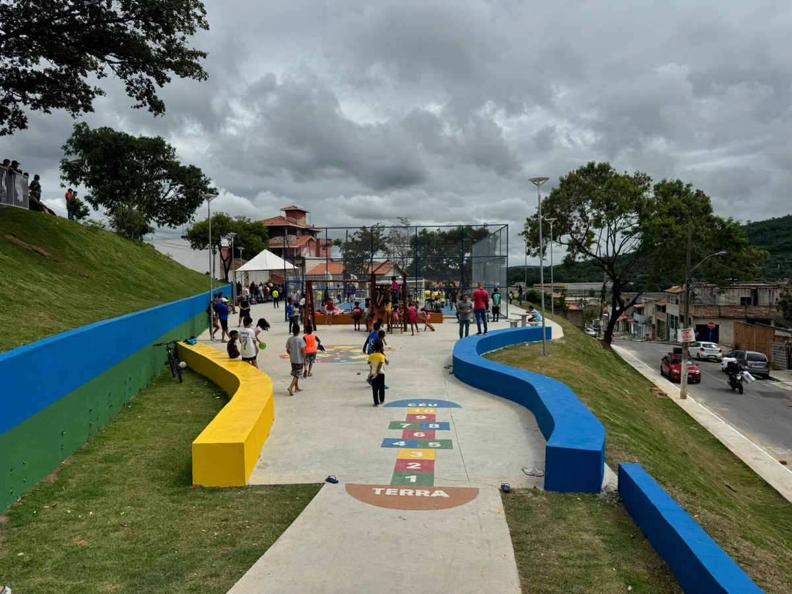

Nova praça é inaugurada no bairro.
A prefeitura inaugurou hoje a nova praça central,que agora conta con novos bancos,
iluminação de led e um espaço de lazer com quadra e patio para as familias do bairro.
Para saber mais: Clique aqui